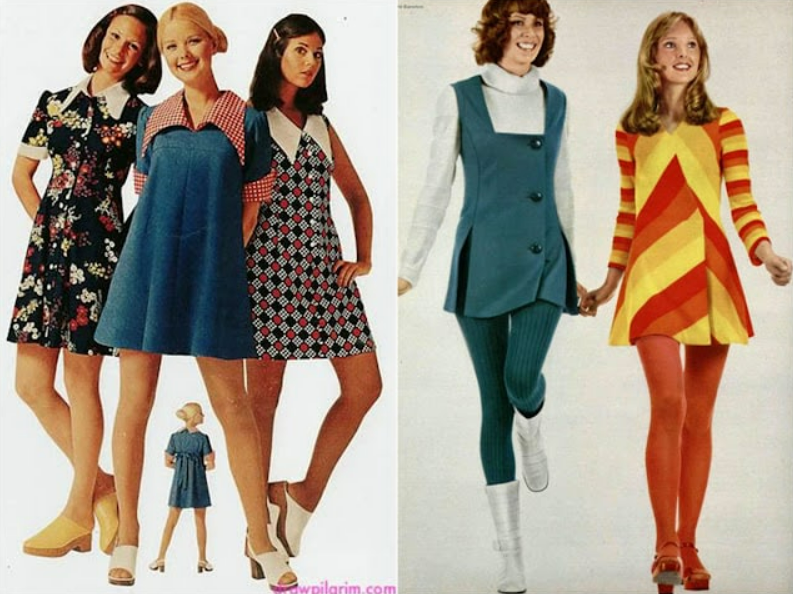
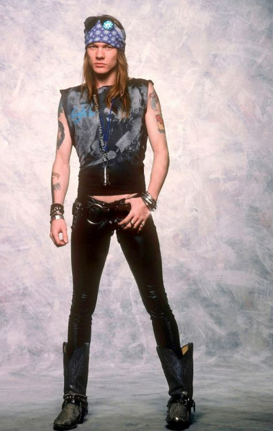
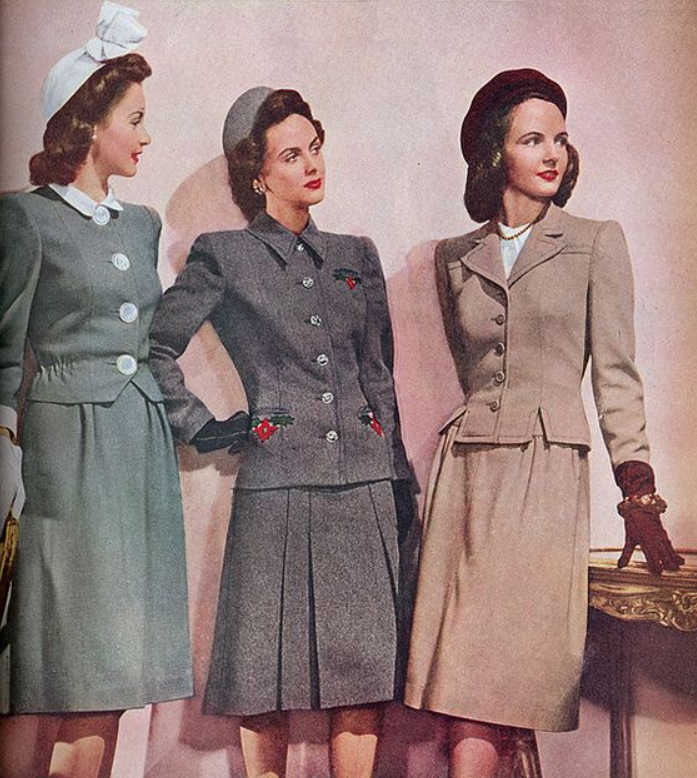
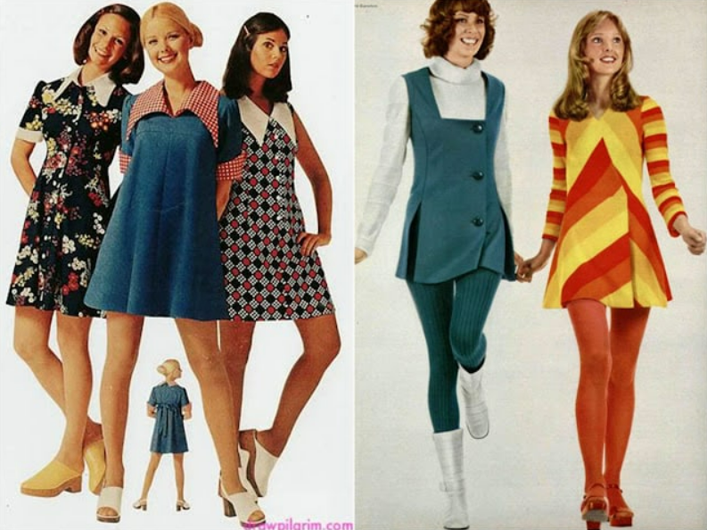
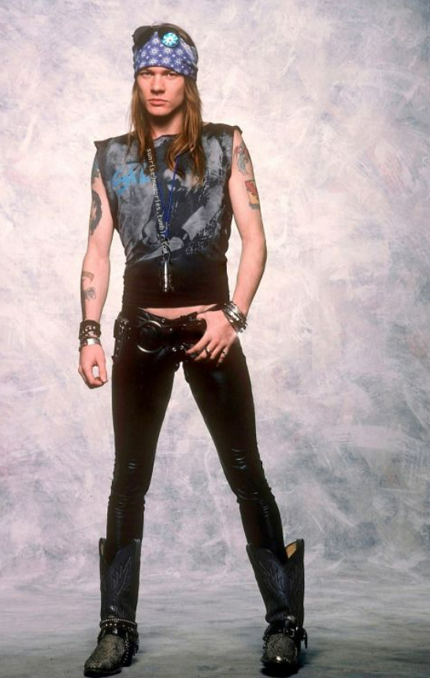
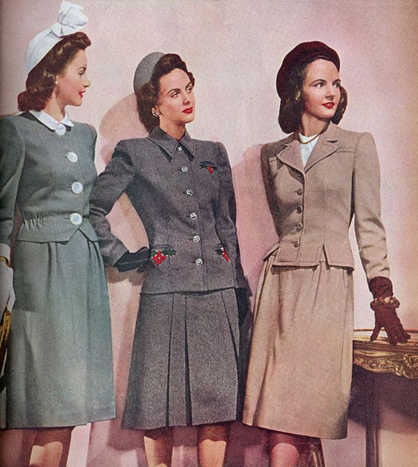
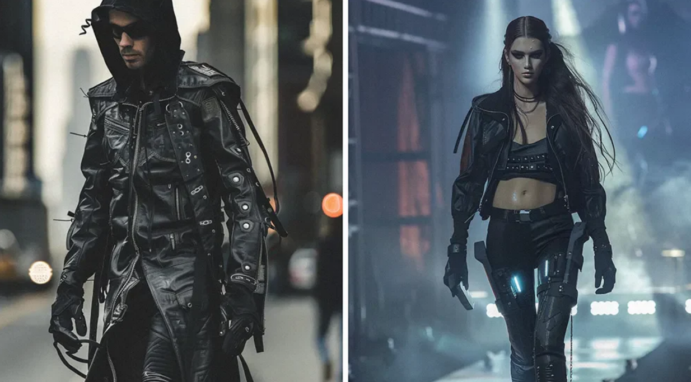
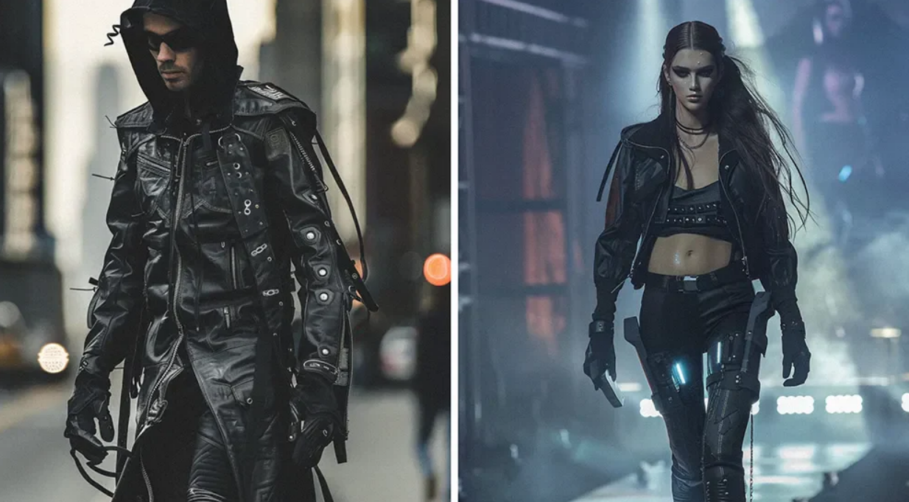

Tecnologia
O jornal impresso continua no mercado, mas em 1999 era muito comum as pessoas lerem nas ruas ou em qualquer lugar.
As pessoas não conseguiam baixar filmes na internet, assistir filmes em DVD e canal fechado eram opções mais caras. Para economizar usam o popular VHS.
Não existia streaming (Netflix, HBO max etc). As pessoas procuravam o que assistir nas locadores.
A câmera digital ainda não exista, por isso as pessoas precisavam ter rolos de filme para tirar as fotos das câmeras analógicas.
Pendrive não existia na época, o jeito mais fácil de guardar os arquivos era utilizando um disquete
As pessoas imprimiam os trajetos que precisavam fazer para chegar em um determinado local.
Os pagamentos eram todos feitos em bancos físicos. Não existia serviços online para bancos.


 






 
